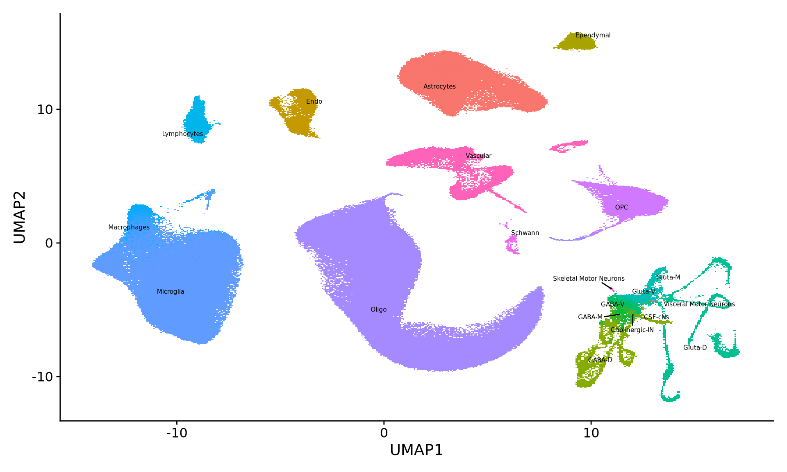
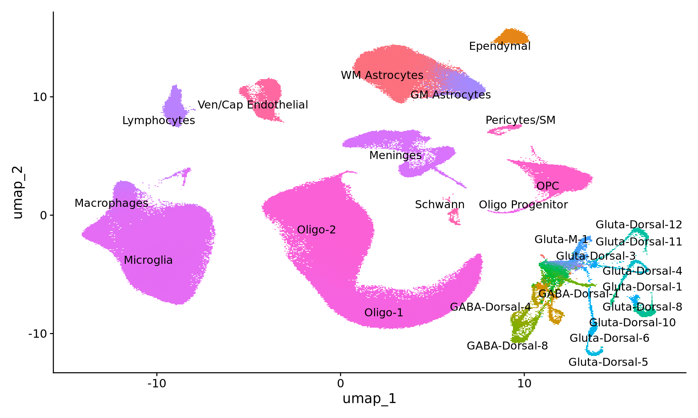
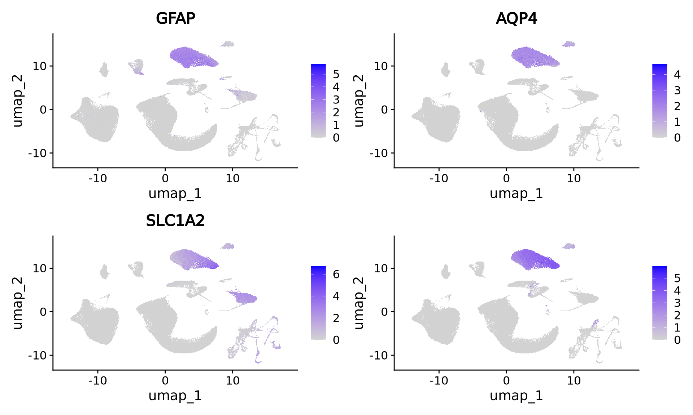
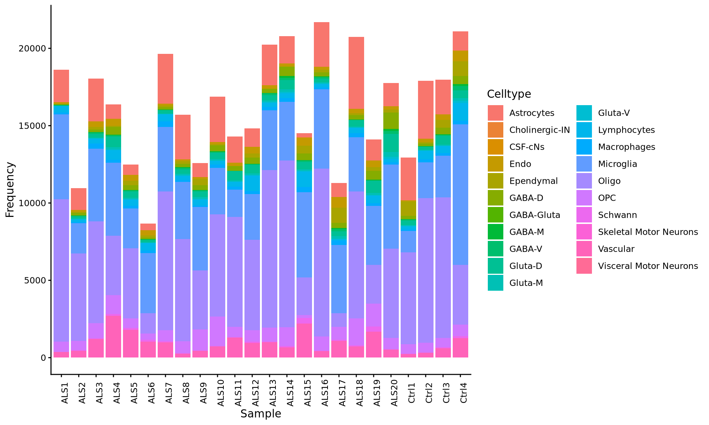
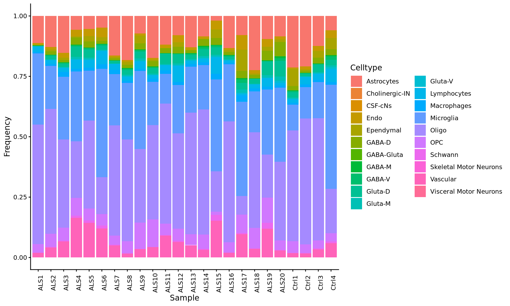
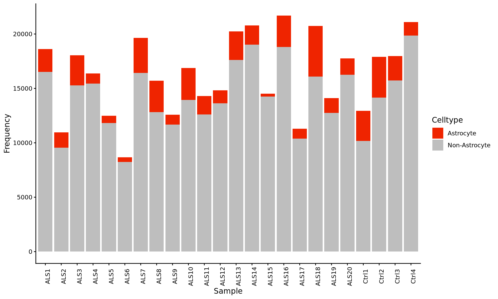
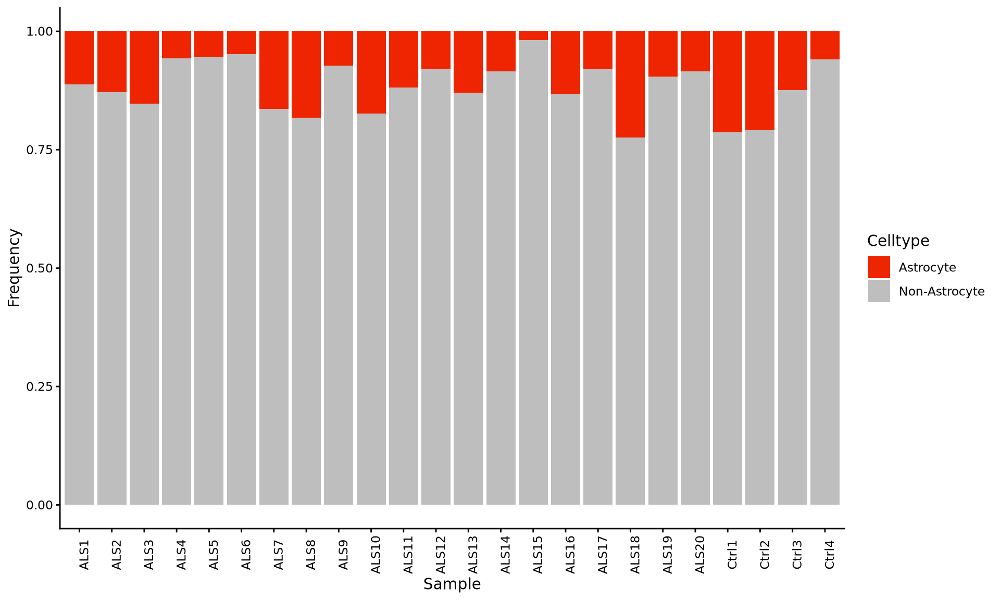

# Basics
library(tidyverse)
library(patchwork)
library(knitr)
library(here)
# Analysis-specific
library(Seurat)1. Subsetting Astrocytes
About this analysis
This is the first script of this project. In this script, I will open the full dataset (with all celltypes), examine the astrocytes (e.g. what proportion of total cells they form per sample), and subset the astrocytes.
Preparation
Prerequisites
This script was run with the conda environment r_scrnaseq_core.
Packages
Directories
# Get string of home directory. I used the here package, which sets the home
# directory when loading library(here)
dir_home <- here::here()
## Data directories
# This is one of just two scripts which loads from data/raw, so I will work
# with dir_data_in and dir_data_out in this script, whereas subsequent files
# only use the folder data/processed
dir_data_in <- file.path(dir_home, "data/raw")
dir_data_out <- file.path(dir_home, "data/processed")
## Results directories
# Create subfolders with the name of this script, so all figures of this script
# are in the same place
folder_name <- knitr::current_input(dir = FALSE)
folder_name <- str_remove(folder_name, "\\.\\w*$")
dir_fig <- file.path(dir_home, "results/figures", folder_name)
dir.create(dir_fig, recursive = TRUE, showWarnings = FALSE)
dir_tab <- file.path(dir_home, "results/tables", folder_name)
dir.create(dir_tab, recursive = TRUE, showWarnings = FALSE)
## Manuscript figure directory
# rds/grob objects for report figures land here, to be assembled by
# scripts/11_assemble_manuscript_figures.qmd
dir_man <- file.path(dir_home, "results/figures/manuscript")Defining variables
This code block defines variables to be used throughout the rest of the document. If someone ever wants to run these scripts with different variables, they can easily change it here. I’ll substantiate any choices here.
astro_markers
The first three are well-established astrocyte markers; OBI1-AS1 might be a bit of suprising one. Some recent studies (e.g. Mamivand et al.) showed that this antisense RNA is highly specific for astrocytes.
astro_markers <- c("GFAP", "AQP4", "SLC1A2", "OBI1-AS1")Helper functions
Click here to view the helper functions of this document
theme_quarto() and theme_manuscript()
I created my own themes to add to figures. theme_quarto() is used to add themes to figures as displayed in the Quarto document and saved to disk as .pdf or .png. theme_manuscript() is used to add themes to figures as they will end up in the manuscript. I can already add arguments with theme() or specific themes (e.g. theme_classic(), my personal favourite) to plots; adding theme() afterwards keeps whatever was added in theme() before it, unless I specify that arugment here - that’s why I allowed to specify some things within my functions as well.
theme_quarto <- function(
legend_position = "right",
plot_title = element_blank()
) {
theme(
plot.title = plot_title,
legend.position = legend_position
)
}
theme_manuscript <- function(
legend_position = "none",
plot_title = element_blank(),
axis_title_size = 8,
axis_text_size = 6
) {
theme(
plot.title = plot_title,
legend.position = legend_position,
axis.title = element_text(size = axis_title_size),
axis.text = element_text(size = axis_text_size),
legend.key.size = unit(0.4, "cm"),
legend.text = element_text(size = 8),
legend.title = element_text(size = 9)
)
}save_plot()
This document displays all the figures I make, but I also want them saved to disk — both as .png and .pdf. I only need to provide the ggplot object, a filename (without extension), and optionally the width and height of the figure and additional arguments put into themes.
The figures for my written report contain subfigures spread across multiple scripts. Since I want to assemble these panel figures via R code rather than by hand, save_plot() can also optionally save the plot object itself to disk as an .rds file, for a final script to later combine with patchwork. Set figure to the name the figure should carry in the report (e.g. "SF1A") to trigger this; leave it NULL (the default) to just save the .png/.pdf as normal.
A live ggplot object carries its underlying data along with it — for plots built from large Seurat objects, this can balloon the saved file to gigabytes. To avoid this, save_plot() converts the object to a grob (a static, pre-rendered drawing, with no data attached) before saving it as .rds. This is controlled by the grob argument, and defaults to TRUE, since converting a small plot costs nothing but forgetting to convert a large one is expensive. Set grob = FALSE only if a later step specifically needs the original, live ggplot object rather than its rendered form.
save_plot <- function(
p, filename,
width = 10, height = 6,
figure = NULL, grob = TRUE, apply_theme = TRUE,
add_tag = TRUE, tag_text_size = 14,
legend_pos_manuscript = "none"
) {
## Save image on disk as png and pdf
# Add Quarto-specific theme, unless the plot has its own custom theme
if (apply_theme) {
p_image <- p + theme_quarto()
} else {
p_image <- p
}
file_png <- file.path(dir_fig, paste0(filename, ".png"))
ggsave(file_png, p_image, width = width, height = height, dpi = 150)
file_pdf <- file.path(dir_fig, paste0(filename, ".pdf"))
ggsave(file_pdf, p_image, width = width, height = height, dpi = 150)
## Save the ggplot object on disk as an rds file
if (!is.null(figure)) {
# Add tag if needed
if (add_tag) {
tag <- str_extract(figure, "[A-Z]$")
p <- p +
labs(tag = tag) +
theme(
plot.tag = element_text(
face = "bold",
size = tag_text_size,
hjust = 0, vjust = 0
)
)
}
# Add manuscript-specific theme, unless the plot has its own custom theme
if (apply_theme) {
p <- p + theme_manuscript(legend_position = legend_pos_manuscript)
}
file_rds <- file.path(dir_man, paste0(figure, ".rds"))
# Convert the object to a grob if needed
if (grob) {
p <- ggplotGrob(p)
}
# Save on disk
saveRDS(p, file_rds)
}
}print_tabset()
Quarto cannot cross-reference figures that are made inside a loop. To still display the plots of a loop in this document, I collect them in a named list and show them as tabs with print_tabset(). The names of the list become the tab titles. It also accepts data frames (shown as a table). This function writes raw Quarto markdown, so the chunk that calls it needs the chunk option #| output: asis. heading_level should be one deeper than the heading above the chunk.
print_tabset <- function(obj_list, heading_level = 3) {
cat("::: {.panel-tabset}\n\n")
for (nm in names(obj_list)) {
cat(strrep("#", heading_level), " ", nm, "\n\n", sep = "")
obj <- obj_list[[nm]]
if (inherits(obj, "ggplot")) {
print(obj)
} else if (is.data.frame(obj)) {
cat(knitr::kable(obj, format = "pipe"), sep = "\n")
}
cat("\n\n")
}
cat(":::\n\n")
}calc_freq()
In the section Visualization Astrocyte Frequency, I’ll make barplots with the frequencies of cell types per sample. I will create figures which show the frequency of all cell types, but also one which just shows astrocytes vs non-astrocytes. To do this efficiently, I created the function calc_freq which can calculate both.
calc_freq <- function(metadata, col_celltype, col_sample = "AnonymousID") {
freq_table <- table(
metadata[, col_celltype],
metadata[, col_sample]
) |>
as.data.frame()
colnames(freq_table) <- c("Celltype", "Sample", "Frequency")
# Rearrange factor levels so they are in a sensible order; as sample numbers
# are given with single digits for single digit character, it's currently in
# the order ALS1, ALS10, ALS11, ..., ALS19, ALS2, ALS20, ALS3, ALS4 etc. and
# does not count up like we humans would.
freq_table <- freq_table |>
mutate(
Sample = fct_relevel(
Sample, str_sort(unique(as.character(Sample)), numeric = TRUE)
)
)
freq_table
}bar_freq()
bar_freq() creates the visualizations of the same section. The argument freq_type becomes the argument to position in geom_bar: “stack” makes it absolute, “fill” makes it proportional. I added the argument just_astro because I want to manually colour the plot red vs grey in case of the astrocyte vs non-astrocyte plot. The function assumes you provide the output of calc_freq() as input.
# The argument freq_type becomes the argument to position in geom_bar.
# "stack" makes it absolute, "fill" makes it proportional.
bar_freq <- function(freq_table, freq_type = "fill", just_astro = FALSE) {
p_bar <- ggplot(freq_table, aes(fill = Celltype, y = Frequency, x = Sample)) +
geom_bar(position = freq_type, stat = "identity")
# Rotate x-axis labels, otherwise the x-axis becomes unreadable
p_bar <- p_bar +
theme_classic() +
theme(axis.text.x = element_text(angle = 90))
if (just_astro) {
p_bar <- p_bar + scale_fill_manual(values = c("#EF2400", "grey"))
}
p_bar
}Astrocytes in the dataset with all celltypes
Load Seurat in from disk
The object seu_shortread_allcelltypes_postQC.rds was the object which Charlotte shared with me after her full QC.
file_rds <- file.path(dir_data_in, "seu_shortread_allcelltypes_postQC.rds")
seu <- readRDS(file_rds)
# Test whether it loaded in correctly
seuAn object of class Seurat
34466 features across 390072 samples within 1 assay
Active assay: RNA (34466 features, 4000 variable features)
49 layers present: counts.ALS10, counts.ALS12, counts.ALS14, counts.ALS16, counts.ALS18, counts.ALS2, counts.ALS3, counts.ALS5, counts.ALS7, counts.ALS9, counts.Ctrl2, counts.Ctrl4, counts.ALS1, counts.ALS11, counts.ALS13, counts.ALS15, counts.ALS17, counts.ALS19, counts.ALS20, counts.ALS4, counts.ALS6, counts.ALS8, counts.Ctrl1, counts.Ctrl3, data.ALS10, data.ALS12, data.ALS14, data.ALS16, data.ALS18, data.ALS2, data.ALS3, data.ALS5, data.ALS7, data.ALS9, data.Ctrl2, data.Ctrl4, data.ALS1, data.ALS11, data.ALS13, data.ALS15, data.ALS17, data.ALS19, data.ALS20, data.ALS4, data.ALS6, data.ALS8, data.Ctrl1, data.Ctrl3, scale.data
3 dimensional reductions calculated: pca, harmony, umapThe metadata can be structured a little better, so I’ll do that now, so that it’s changed for all future analyses.
- There was not yet a column with
ALSvsCtrl, so I added the columncondition. - In the column pTDP-43 stage, all controls and samples ALS17 and ALS18 are empty. For the controls, that’s because they do not have ALS and no pTDP-43 pathology, but samples ALS17 and ALS 18 are empty because they have FUS ALS - which has a different pathology. I added
"Ctrl"and"FUS ALS"to solve these. - The controls have empty strings in the column
primary_site_of_onset, so I set these to"Ctrl". - Only one sample has pTDP-43 stage 2, so I lumped it together with 3 - otherwise comparison with stage 2 always looks weird, because it has n = 1
metadata <- seu@meta.data
metadata <- metadata |>
mutate(
condition = ifelse(
str_detect(AnonymousID, "Ctrl") == TRUE,
"Ctrl",
"ALS"
),
pTDP.43.Stage = case_when(
AnonymousID %in% c("ALS17", "ALS18") ~ "FUS ALS",
str_detect(AnonymousID, "Ctrl") == TRUE ~ "Ctrl",
.default = as.character(pTDP.43.Stage)
),
# The Ctrls have "" at primary_site_of_onset. Make this "Ctrl"
primary_site_of_onset = ifelse(
str_detect(AnonymousID, "Ctrl") == TRUE,
"Ctrl",
primary_site_of_onset
),
pTDP43_lumped = case_when(
pTDP.43.Stage %in% c("2", "3") ~ "2 & 3",
.default = as.character(pTDP.43.Stage)
),
# This relevel steps makes the visualizations make more sense
pTDP43_lumped = fct_relevel(pTDP43_lumped, "Ctrl", "FUS ALS")
)
seu@meta.data <- metadataVisualization annotation all celltypes
Charlotte defined major cell types using a publicly available atlas of the human spinal cord of the Allan Brain Insitute. These are stored in the columns predicted.id_coarse_allen_subclass and predicted.id_coarse_allen_group, with the latter having a more subdivided annotation than the former.
# I want to show both subclass and cellclass. First show subclass
p_allen_subclass <- DimPlot(
seu,
reduction = "umap",
group.by = "predicted.id_coarse_allen_subclass",
label = TRUE,
repel = TRUE,
label.size = 2, # Small label size for manuscript figure
raster = TRUE
) +
labs(x = "UMAP1", y = "UMAP2")
p_allen_subclass + theme_quarto(legend_position = "none")
p_allen_group <- DimPlot(
seu,
reduction = "umap",
group.by = "predicted.id_coarse_allen_group",
label = TRUE,
repel = TRUE
)
p_allen_group + theme_quarto(legend_position = "none")
Visualization astrocyte markers
I previously provided the annotation of celltypes, but I would like to confirm that the labelled astrocytes are astrocytes. A FeaturePlot() with astrocyte-marker genes forms a quick way to do so. In the default settings of this document, I provided the astrocyte marker genes c("GFAP", "AQP4", "SLC1A2", "OBI1-AS1"). You can see that the astrocyte cluster expresses these markers.
p_feature <- FeaturePlot(
seu,
features = astro_markers,
reduction = "umap"
)
p_feature + theme_quarto()
Visualization astrocyte frequency
I want to show how many astrocytes each sample has. I will create multiple types of barplots.
- visualizations of proportional frequency and visualizations with relative frequency (as scRNAseq data is proportional)
- visualizations with the frequency of all celltypes vs visualizations with just astrocytes vs non-astrocytes
This section uses the functions calc_freq and bar_freq, which I created myself in the section Helper functions.
Frequency of all cell types
I use the column predicted.id_coarse_allen_subclass, which is the same one as used in Figure 1.
# Extract dataframe from seurat object
metadata <- seu@meta.data |>
as.data.frame()
# Calculate frequencies of celltypes
freq_table <- calc_freq(
metadata,
"predicted.id_coarse_allen_subclass",
"AnonymousID"
)
# Display what the new data structure looks like
kable(head(freq_table, 10))| Celltype | Sample | Frequency |
|---|---|---|
| Astrocytes | ALS1 | 2089 |
| Cholinergic-IN | ALS1 | 2 |
| CSF-cNs | ALS1 | 2 |
| Endo | ALS1 | 112 |
| Ependymal | ALS1 | 34 |
| GABA-D | ALS1 | 38 |
| GABA-Gluta | ALS1 | 1 |
| GABA-M | ALS1 | 5 |
| GABA-V | ALS1 | 31 |
| Gluta-D | ALS1 | 25 |
p_abs <- bar_freq(freq_table, "stack")
p_abs + theme_quarto()
p_prop <- bar_freq(freq_table, "fill")
p_prop + theme_quarto()
Frequency astrocyte vs non-astrocyte
# Make a column which states whether something is an astrocyte or not
metadata$astro <- ifelse(
test = metadata$predicted.id_coarse_allen_subclass == "Astrocytes",
yes = "Astrocyte",
no = "Non-Astrocyte"
)
# Calculate frequencies of astrocyte vs non-astrocyte per sample
freq_table <- calc_freq(metadata, "astro", "AnonymousID")
# Show the top rows in the knitted file
kable(head(freq_table))| Celltype | Sample | Frequency |
|---|---|---|
| Astrocyte | ALS1 | 2089 |
| Non-Astrocyte | ALS1 | 16528 |
| Astrocyte | ALS10 | 2931 |
| Non-Astrocyte | ALS10 | 13937 |
| Astrocyte | ALS11 | 1693 |
| Non-Astrocyte | ALS11 | 12595 |
Only colouring astrocytes vs non-astrocytes makes it clearer to see at first glance.
p_abs <- bar_freq(freq_table, "stack", just_astro = TRUE)
p_abs
p_prop <- bar_freq(freq_table, "fill", just_astro = TRUE)
p_prop
Subset astrocytes and save on disk
Now that we have inspected the astrocytes in the whole dataset, I can subset the astrocytes which I will continue in the rest of the project. I wil subset the astrocytes as annotated in the column predicted.id_coarse_allen_subclass, which was visualized in Figure 1.
seu_astros <- subset(
seu,
subset = predicted.id_coarse_allen_subclass == "Astrocytes"
)
# Inspect
seu_astrosAn object of class Seurat
34466 features across 46995 samples within 1 assay
Active assay: RNA (34466 features, 4000 variable features)
49 layers present: counts.ALS10, counts.ALS12, counts.ALS14, counts.ALS16, counts.ALS18, counts.ALS2, counts.ALS3, counts.ALS5, counts.ALS7, counts.ALS9, counts.Ctrl2, counts.Ctrl4, counts.ALS1, counts.ALS11, counts.ALS13, counts.ALS15, counts.ALS17, counts.ALS19, counts.ALS20, counts.ALS4, counts.ALS6, counts.ALS8, counts.Ctrl1, counts.Ctrl3, data.ALS10, data.ALS12, data.ALS14, data.ALS16, data.ALS18, data.ALS2, data.ALS3, data.ALS5, data.ALS7, data.ALS9, data.Ctrl2, data.Ctrl4, data.ALS1, data.ALS11, data.ALS13, data.ALS15, data.ALS17, data.ALS19, data.ALS20, data.ALS4, data.ALS6, data.ALS8, data.Ctrl1, data.Ctrl3, scale.data
3 dimensional reductions calculated: pca, harmony, umapEven though one could technically still call this a raw file (I have not done any preprocessing besides subsetting the astrocytes), I will store it in the folder data/processed rather than data/raw: I count the subsetting as preprocessing.
file_rds <- file.path(dir_data_out, "seu_shortread_astros_subset.rds")
saveRDS(seu_astros, file_rds)Session info
I used the conda environment r_scrnaseq_core to run this script. You can find major package versions in the file /environments/r_scrnaseq_core.yml, but for full reproducibility, I’ll display all dependencies and package versions below.
sessionInfo()R version 4.4.3 (2025-02-28)
Platform: x86_64-conda-linux-gnu
Running under: Rocky Linux 8.10 (Green Obsidian)
Matrix products: default
BLAS/LAPACK: /path/to/folder/software/miniforge/miniforge3/envs/r_scrnaseq_core/lib/libopenblasp-r0.3.34.so; LAPACK version 3.12.0
locale:
[1] LC_CTYPE=en_US.UTF-8 LC_NUMERIC=C
[3] LC_TIME=en_US.UTF-8 LC_COLLATE=en_US.UTF-8
[5] LC_MONETARY=en_US.UTF-8 LC_MESSAGES=en_US.UTF-8
[7] LC_PAPER=en_US.UTF-8 LC_NAME=C
[9] LC_ADDRESS=C LC_TELEPHONE=C
[11] LC_MEASUREMENT=en_US.UTF-8 LC_IDENTIFICATION=C
time zone: Europe/Amsterdam
tzcode source: system (glibc)
attached base packages:
[1] stats graphics grDevices utils datasets methods base
other attached packages:
[1] Seurat_5.5.1 SeuratObject_5.4.0 sp_2.2-3 here_1.0.2
[5] knitr_1.52 patchwork_1.3.2 lubridate_1.9.5 forcats_1.0.1
[9] stringr_1.6.0 dplyr_1.2.1 purrr_1.2.2 readr_2.2.0
[13] tidyr_1.3.2 tibble_3.3.1 ggplot2_4.0.3 tidyverse_2.0.0
loaded via a namespace (and not attached):
[1] deldir_2.0-4 pbapply_1.7-4 gridExtra_2.3.1
[4] rlang_1.3.0 magrittr_2.0.5 RcppAnnoy_0.0.23
[7] otel_0.2.0 spatstat.geom_3.8-2 matrixStats_1.5.0
[10] ggridges_0.5.7 compiler_4.4.3 systemfonts_1.3.2
[13] png_0.1-9 vctrs_0.7.3 reshape2_1.4.5
[16] pkgconfig_2.0.3 fastmap_1.2.0 labeling_0.4.3
[19] promises_1.5.0 rmarkdown_2.32 tzdb_0.5.0
[22] ragg_1.5.2 xfun_0.60 jsonlite_2.0.0
[25] goftest_1.2-3 later_1.4.8 spatstat.utils_3.2-5
[28] irlba_2.3.7 parallel_4.4.3 cluster_2.1.8.3
[31] R6_2.6.1 ica_1.0-3 spatstat.data_3.1-9
[34] stringi_1.8.9 RColorBrewer_1.1-3 reticulate_1.47.0
[37] spatstat.univar_3.2-0 parallelly_1.48.0 lmtest_0.9-40
[40] scattermore_1.2 Rcpp_1.1.2 tensor_1.5.1
[43] future.apply_1.20.2 zoo_1.9-0 sctransform_0.4.3
[46] httpuv_1.6.17 Matrix_1.7-6 splines_4.4.3
[49] igraph_2.3.3 timechange_0.4.0 tidyselect_1.2.1
[52] abind_1.4-8 yaml_2.3.12 spatstat.random_3.5-1
[55] codetools_0.2-20 miniUI_0.1.2 spatstat.explore_3.8-2
[58] listenv_1.0.0 lattice_0.23-1 plyr_1.8.9
[61] shiny_1.14.0 withr_3.0.3 S7_0.2.2
[64] ROCR_1.0-12 evaluate_1.0.5 Rtsne_0.17
[67] future_1.76.0 fastDummies_1.7.6 survival_3.8-12
[70] polyclip_1.10-7 fitdistrplus_1.2-6 pillar_1.11.1
[73] KernSmooth_2.23-27 plotly_4.12.1 generics_0.1.4
[76] rprojroot_2.1.1 RcppHNSW_0.7.0 hms_1.1.4
[79] scales_1.4.0 globals_0.19.1 xtable_1.8-8
[82] glue_1.8.1 tools_4.4.3 data.table_1.18.6.1
[85] RSpectra_0.16-2 RANN_2.6.2 dotCall64_1.2
[88] cowplot_1.2.0 grid_4.4.3 nlme_3.1-170
[91] cli_3.6.6 spatstat.sparse_3.2-0 textshaping_1.0.5
[94] spam_2.11-4 viridisLite_0.4.3 uwot_0.2.5
[97] gtable_0.3.6 digest_0.6.39 progressr_1.0.0
[100] ggrepel_0.9.8 htmlwidgets_1.6.4 farver_2.1.2
[103] htmltools_0.5.9 lifecycle_1.0.5 httr_1.4.9
[106] mime_0.13 MASS_7.3-66